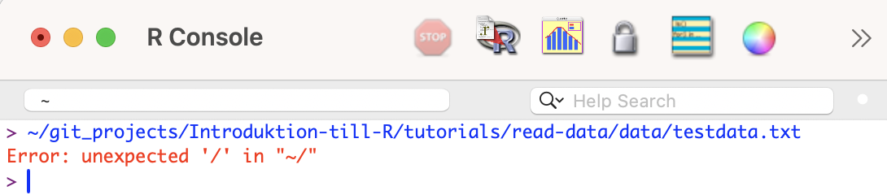

Code
testdata <- read.table("data/testdata.txt",
header=T,
sep="\t",
dec=",") Det första steget, innan man gör en statistisk analys, är alltid att läsa in data i R. Det är också ett steg som kan krångla.
R kan hantera ett stort antal dataformat, vissa av dem läses automatiskt, andra kräver att man laddar ner och installerar specialiserade paket
| Filändelse | Beskrivning | Funktion | Extra paket krävs | Kommentarer |
|---|---|---|---|---|
txt |
Tab-avgränsad text | read.table() |
- | |
csv |
komma/semikolon-avgränsad text | read.csv() |
- | Specificera om avgränsningen är “,” eller “;” |
xlsx |
Exceldokument | read.xlsx() |
openxlsx |
Ange vilket blad som skall läsas in |
Det finns många sätt att läsa in en fil, det beror dels på om du använder R eller R Studio, men också på om du vill dokumentera vad filen herer och var den ligger i ditt script (rekommenderas för reproducibilitet). Slutligen kan valet bero på om du använder R-projekt eller inte.
txt i R med absolut sökvägI följande exempel läser vi in en tab-avgränsad datafil med filändelsen txt i R.
Metoden bygger på att vi vill ha den absoluta sökvägen till våran datafil (dvs var på hårddisken den ligger), det är en bra metod att använda sig av för att alltid veta vilken fil, man arbetar med.
Fördel
Nackdel
Ladda ner följande fil testdata.txt (högerklicka, välj “spara länk som”) och spara filen på din hårddisk.
Alla sparade filer ligger någonstans på din hårddisk, och du måste tala om för R var den filen som du vill läsa in ligger.
Det enklaste sättet att få reda på den absoluta sökvägen är att öpna din filhanterare (finder, utforskaren eller liknande) och leta upp filen. Sedan drar du filen och släpper den i R-konsolen. Då kommer du få se dess sökväg, vilket visas i blått på en Mac (samt ev felmeddelanden eftersom du gör något som R inte förstår, men R ger dig sökvägen, vilket är vad vi vill ha).

Sökvägen till filen på min dator är: ~/git_projects/Introduktion-till-R/tutorials/read-data/data/testdata.txt
R Studio - om du använder R studio fungerar det inte att dra filen till konsolen. Istället kan du öppna din terminal (Terminal, iTerm, EMAC, MobaXterm etc) och släppa filen där. Eller gör det i vanliga R. Då får du en sökväg.

Vi kommer att läsa in filen med funktionen read.table().
testdata <- read.table("data/testdata.txt",
header=T,
sep="\t",
dec=",") <- betyder att vi sparar resultatet av funktionen (just nu read.table()) i ett objekt. Eftersom det är vårt data är objektet en dataframe. Pilen <- pekar på objektet, och vi ger det ett passande namn, i det här fallet testdata.
read.table() är funktionen för att läsa in textfiler med filändelsen .txt
"data/testdata.txt" är sökvägen till datafilen, dvs platsen den är sparad på din hårddisk (data/), och namnet på filen (testdata.txt).
header=T betyder att den första radan i datafilen är en rubrikrad och inte består av data. Det är nästan alltid fallet om du läser in en datafil till R. Om även första raden består av data (dvs det finns inga rubriker) ersätter du T med F (T står för True, F står för False).
sep=T betyder att alla värden/celler är separerade med TAB (det är en tab-separerad textfil).
dec="," betyder att kommatecken används som decimalseparator (ex 1,32). Om filen istället använder punkt som decimalseparator (ex 1.32), anger du istället dec="."
Nästa steg är att insprektera ditt dataset, för att se om allt gått rätt till vid inläsningen
Börja med att inspektera datasetets struktur med str().
str(testdata)'data.frame': 10 obs. of 3 variables:
$ Colour: chr "Green" "Green" "Green" "Green" ...
$ Weight: int 4 3 5 4 5 12 14 15 11 14
$ Length: num 1.3 1.1 3.4 2.5 7.1 14.5 16.9 13.5 9.4 11$ Colour: chr betyder att värderna i Colour kolumnen är bokstäver (characters)
$ Weight: int betyder att värderna i kolumnen Weight är heltal (integers)
$ Length: num betyder att värderna i kolumnen Length är decimaltal (numeric)
Om du har en kolumn som borde innehålla decimaltal, skall det stå num. Om det istället står chr betyder det att datafiler har punkt som decimalavskiljare, men du utgår från att det är komma (eller tvärtom) och R tror att det är text. Ändra avskiljare, ex från dec="," till dec="." i koden och importera datasetet på nytt.
Sedan visar du de första raderna i ditt dataset med funktionen head() och verifierar att allt ser korrekt ut.
head(testdata) Colour Weight Length
1 Green 4 1.3
2 Green 3 1.1
3 Green 5 3.4
4 Green 4 2.5
5 Green 5 7.1
6 Blue 12 14.5